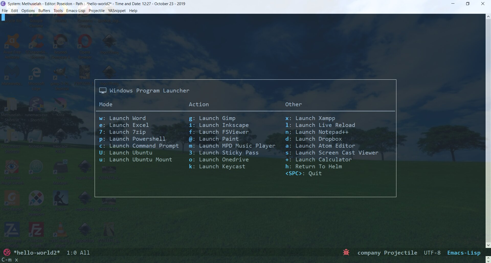

Most of my code has changed a lot recently. Check updated posts.
For each post can update code listed in that post. Keep in mind code for linux and wsl configs will have their own posts, except in the case of .early-init and init.el, which have system switches (to load system specific dot-files).
Also note: abandoned convention of listing init lines. Now if you want to find the code, and there is now plenty of decent emacs code, use the search function. The site is not large.
The Program Launcher is much the same as before.
Will update the linux program launcher which has some pretty cool linux programs. It's on my someday list.
For any readers setting up configuration files for their emacs editor, here is the quick and easy code for the windows program launcher shown in the image below.

Here's the config code:
1
2
3
4
5
6
7
8
9
;path of program you want in your launcher
(defvarname-of-program-p"C:/full-path-to-program/program.exe")
; launcher function
(defunlaunch-program-name ()
(interactive)
(w32-shell-executenilname-of-program-pnil)
);end launch-program-name
Then you can put the launch function name in your hydra config, like this:
I've now enabled guest commenting through anyway Disqus. And that means you can speak to upwards of one hundred enthusiastic emacs viewers every week. Just click your cursor in the comments input and select 'comment as guest'
This kind man didn't invent the term scientist so you could make a mockery of earthly geometrics! He did it because science is badass, just like him. Taking science seriously is the first step to better health and a better world for all. You can take that first step here.
"We need very much a name to describe a cultivator of science in general. I should incline to call him a Scientist." ~ William Whewell.
Seriously though, most of our sciency posts are really about computer science, namely Emacs - but don't be swayed by the Old-Skoolers. If you're choosing a text editor for the first time, Emacs is dead.
Didn't you get the memo? And who are you anyway? Frankenstein? Give it up. Get over it. Go with Webstorm, or Sublime - open up your wallet and pay the man already. Or if you absolutely need to get cranked on Javascript, hit up Atom...it's free, and going places.
Having said all that, we use Emacs, and around here, the Earth is round.